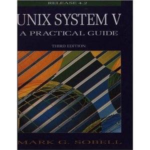

Announcements
- (25/02/2015) Please form your project team via here.
- (01/02/2015) Lab starts from week 2.
- (01/02/2015) Welcome to COMP2021.
HKUST / Department of Computer Science and Engineering
Unix utilities and file structure; links and symbolic links; data processing and process control in the Unix shell; Shell programming; regular expressions; script programming in the Unix environment. Laboratory exercises are designed to give hands-on practice with software tools and to increase programmer productivity.
PrerequisitesCOMP 1002 OR COMP 1004/104H (prior to 2009-10) OR COMP 1021 OR COMP 1022P OR COMP 1022Q; OR a passing grade in HKALE Computer Studies or HKCEE Computer Studies; OR level 3 or above in HKDSE Information and Communication Technology.
Reference Textbook|  |
UNIX System V: A Practical Guide (3rd Edition) Mark G. Sobell Pearson Education Inc. ISBN: 978-0805375664 |

|
Learning Perl(6th Edition) Randal L. Schwartz, brian d foy, and Tom Phoenix O'Reilly Media ISBN: 978-1449303587 |
| Section | Instructor | Meeting time | Venue |
| L1 | LI Xin Cindy | Thur 13:00 - 14:50 | Room 2503 (Lift 25/26) |
| Section | Meeting time | Venue | TA |
| LA1 | Tue 09:00 - 10:50 | Room 4214 | Mr. HU Shuihai |
| LA2 | Mon 13:00 - 14:50 | Room 4214 | Mr. ZHANG Hong |
Exams, homework, papers and other kinds of assessments are essential to the learning process. Honesty and integrity are central to academic work. See regulations for student conduct and academic integrity.
Grading Scheme| Lab assignments | 20% |
| Midterm Exam | 50% |
| Project and Presentation | 30% |